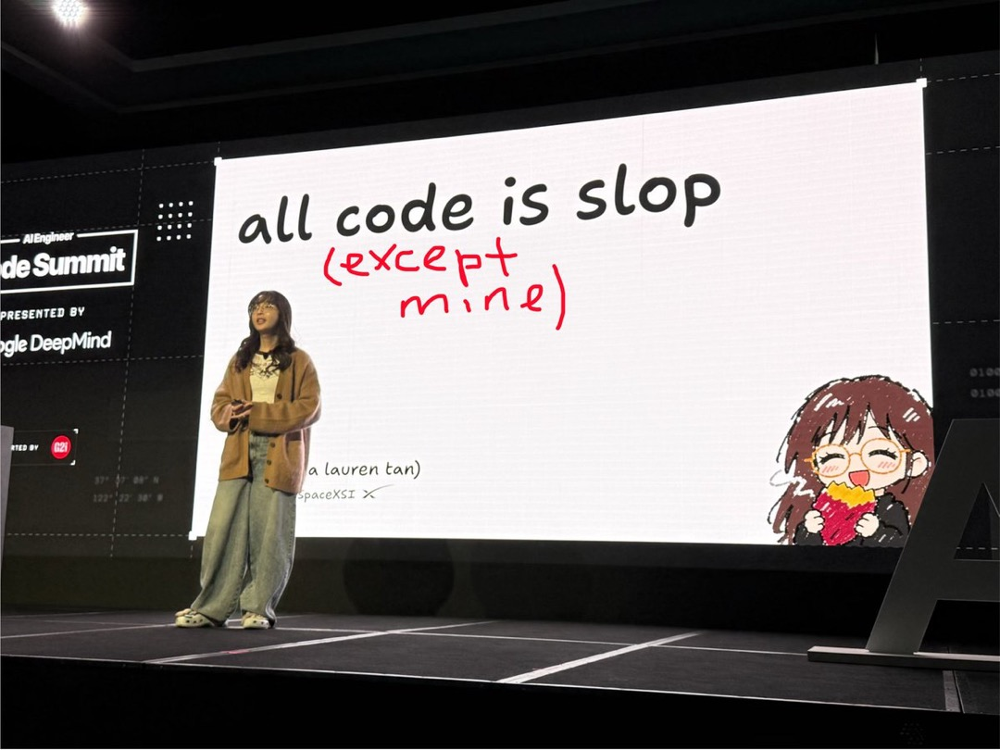
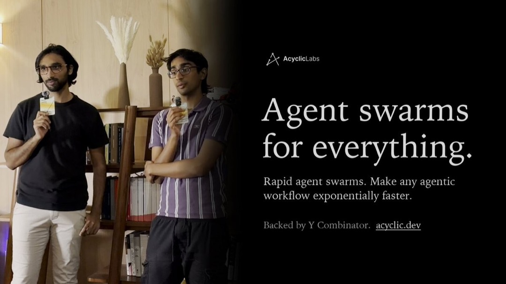
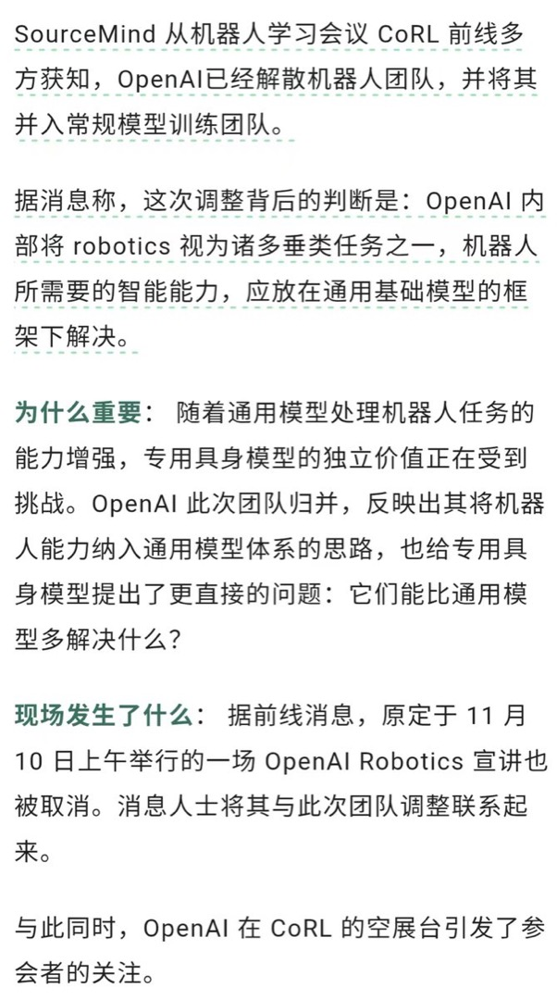
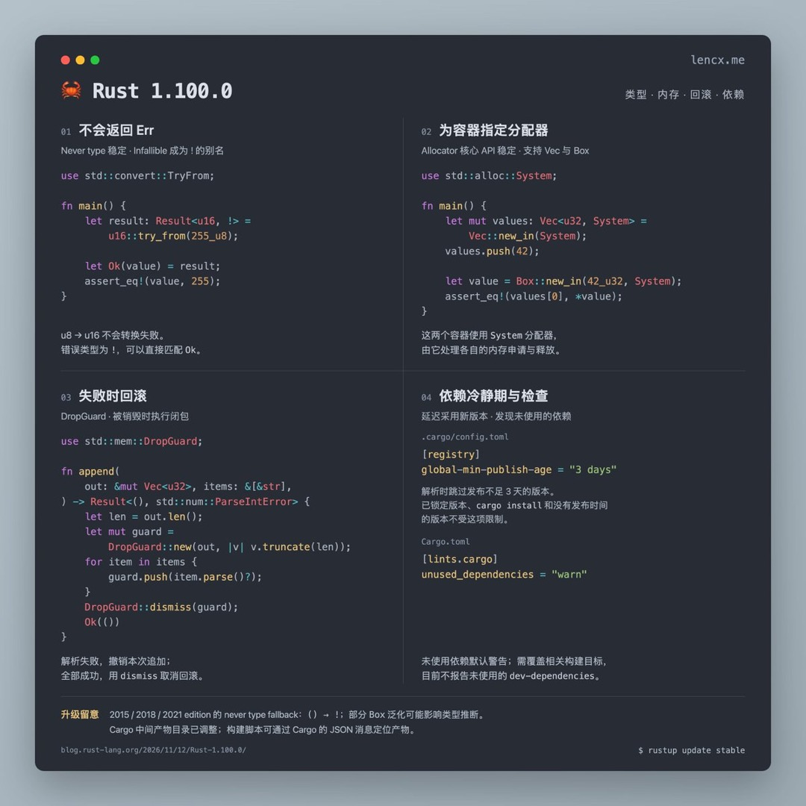
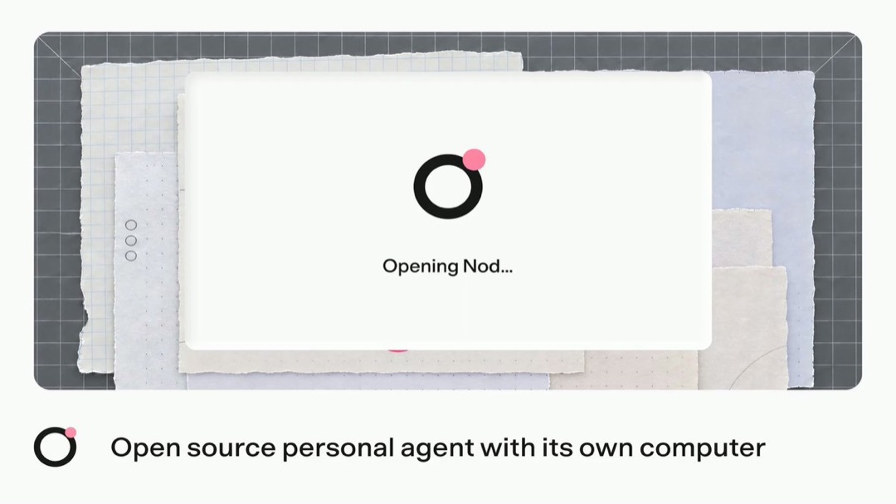
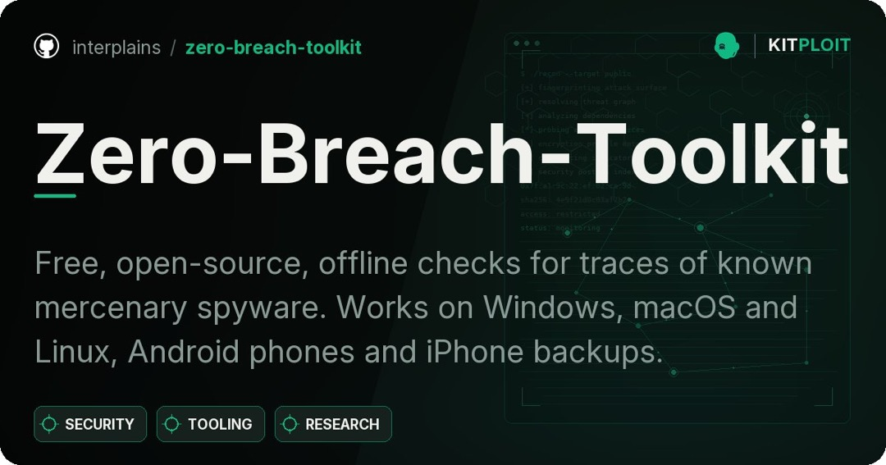

本期速览
02 AI软件工厂回滚率仅0.5%靠工程体系
04 LoopForge编排Agent研发流程
05 Acyclic开源万级Agent运行时
07 Rust 1.100稳定never类型
08 n8n个人Agent Nod敏感操作先确认
01｜七个开源Skill打通游戏与3D制作
来源（X） · @HeLi8866 · 2026-11-13 11:00
想用 Claude Code、Codex 做游戏和3D 的建议直接收藏👇：
1. Claude-Code-Game-Studios（约 3.9 万 star）
→ 一个 Claude Code 秒变游戏开发团队，49 个 Agent 分别负责策划、程序、美术和测试
→ 能接 Godot、Unity、虚幻，不过作者也说引擎这块还没像浏览器游戏那样公开实测过
→ 作者称同一个需求做出了 4 款能跑的游戏，这点我在仓库里没核到
https://github.com/Donchitos/Claude-Code-Game-Studios
2. agent-sprite-forge（约 5500 star）
→ 先定好角色立绘，再逐帧生成待机、奔跑、跳跃、出招、挨打这些动作，还能无缝循环
→ 最后打包给 Godot 和网页小游戏拿来就用，文档带简中版
https://github.com/0x0funky/agent-sprite-forge
3. teardown（约 3200 star）
→ 随口问一句摩托引擎是怎么运转的，Claude 就给你搭出一个可拆解的 3D 模拟
→ 部件转着、读数跳着，还支持导出 60 帧视频
https://github.com/elvarofficial/teardown
4. blender-skills（约 1000 star）
→ 28 个 Blender 技能，建模、贴图、绑骨骼、动画、渲染一条龙
→ 作者说所有脚本都实际放进 Blender 跑过，要求 Blender 5.2
https://github.com/EL4CTEO/blender-skills
5. 3D OS（约 3700 star）
→ Scenario 开源的整套 3D 制作技能，现在已经 87 个了
→ 多数得连他们自家平台，控制 Blender、Unity、Godot、虚幻、Roblox 这块不需要
https://github.com/scenario-labs/skills
6. prompt2rig（约 570 star）
→ 用文字描述一个动作，AI 视频先演示一遍，再迁移到 Mixamo 角色上，连手指都会动
→ 可以导出到 Blender 和 Unity，需要 fal 的 API 和一张 N 卡
https://github.com/blendi-remade/prompt2rig
7. open-3d-skills（约 350 star）
→ 8 个做 3D 网站的技能：three.js 场景、滚动播放动画、机械爆炸拆解图
→ 做完它会自动在浏览器里验收，然后录屏出片
https://github.com/Moh4696/open-3d-skills
想用 AI 折腾游戏和 3D 的，这一套基本够玩很久了。
02｜AI软件工厂回滚率仅0.5%靠工程体系
来源（X） · @Stargridcompass · 2026-11-12 15:55
如果底层研发流程本身就有问题，盲目搞 AI 软件工厂，只会烧着更多 Token，以 10 倍的速度生产垃圾代码。
她的团队单月交付 11,000 个 PR，回滚率仅 0.5%，到底是怎么做到的？
核心就这几点：
1. 重构历史烂代码，避免 Agent 有样学样。
2. 少写 AGENTS.md，把人工纠错变成 Lint、类型约束和架构规则。
3. 给 Agent 足够的工具，让它能自己运行、检查和验证功能。
4. 修复必须提供截图、视频等证据，别光靠小作文证明自己干对了。
5. 把更多 Token 花在自动化测试和形式化验证上。
团队花了整整 6 个月打磨工程环境，让 Agent 写出好代码成为阻力最小的选择。
当工程体系足够成熟，自动发现 Bug、修复、测试、合并代码，自然就能形成闭环。

03｜推理工程开放教程覆盖vLLM与SGLang
来源（X） · @Xudong07452910 · 2026-11-12 12:36
内容从模型如何在 GPU 上运行、KV Cache 显存怎么算、Prefill/Decode 的性能瓶颈，一直讲到 vLLM、SGLang、推理优化、线上监控和 Eval，最后还附有完整的上线检查清单。
从基础原理到实际生产部署都覆盖到了，可以当成一份系统的推理工程课程资料，挺适合跟着学习。
https://docs.modelplane.ai/guides/inference-guide
04｜LoopForge编排Agent研发流程
来源（X） · @CY160909 · 2026-11-12 12:43
刚开源的 LoopForge，可以把一个开发任务拆成完整的研发流程：
先确认需求、设计方案
AI Agent 负责写代码
独立 Agent 进行 Code Review
执行测试，发现问题还能退回修改
保存交付记录，中断后也能继续
而且整套流程能保存成 SOP，下次开发类似功能直接可以复用，不用每次都从头折腾
支持 Claude Code、Codex、CodeBuddy。个人使用可以直接安装 Local 版，不用部署整套平台。
完全开源，MIT 协议。
GitHub：https://github.com/Tencent/LoopForge
05｜Acyclic开源万级Agent运行时
来源（X） · @aaron_epstein · 2026-11-13 08:13
中文译文
Acyclic Labs 刚刚开源了在单次会话中高效运行 10,000 个 agent 群的基础设施。这将使每一个长时间运行的 agent 任务从数小时缩短到数分钟。
祝贺发布 @var1377 @RamV2003!
原文
Acyclic Labs just open-sourced the infra to run 10,000 agent swarms efficiently in a single session. This will take every long-running agent task from hours to minutes.
Congrats on the launch @var1377 @RamV2003!
引用内容
Ram Vinjamuri @RamV2003
中文译文
发布 acyclic labs (yc f26)
更多的 agent 并不意味着更快的工作。我们构建了开源基础设施，可以在一次会话中运行 10,000 个 agent，并立即遇到了真正的壁垒：今天的模型无法在不互相冲突的情况下拆分工作或共享状态
所以我们构建了 SwarmBench 来评估协作能力，构建了 RL 环境来训练它，以及运行时来真正同时运行数千个 agent
下一次飞跃不是更聪明的单个模型，而是让 10,000 个模型真正协同工作
原文
launching acyclic labs (yc f26)
more agents doesn't mean faster work. we built open-source infra to run 10,000 agents in one session and immediately hit the real wall: models today can't split work or share state without stepping on each other
so we built SwarmBench to score coordination, RL envs to train it, and the runtime to actually run thousands at once
the next leap isn't smarter single models, it's getting 10,000 of them to actually work together

06｜OpenAI解散机器人团队并入LLM
来源（X） · @AI_Whisper_X · 2026-11-13 10:59
昨晚g公众号 SourceMind 发了条独家，说从 CoRL 现场多方打听到，OpenAI 已经解散机器人团队，并入常规模型训练团队。理由是内部把 robotics 当成众多垂类任务里的一个，放到通用模型里去解决。
这个我们也确定，OpenAI 确实没去 corl，尽管他们交钱了🤣
但对做这行的人来说，我觉得倒也不用觉得机器人不存在了。各个模型厂肯定要招懂这方面的人，尤其是又懂机器人、又懂模型的。说不定过阵子就能看到，各家模型厂纷纷成立新的机器人 team，hh。

07｜Rust 1.100稳定never类型
来源（X） · @lencx_ · 2026-11-13 10:59
自定义分配器的核心 API 同时进入稳定版，可以通过 Vec::new_in、Box::new_in 为具体容器指定分配器。清理和回滚则有了 DropGuard，例如批量解析字符串写入 Vec，失败时通过闭包撤销新增内容，成功后用 DropGuard::dismiss 取消回滚。
Cargo 新增了未使用依赖检查，但需要覆盖所有可能使用该依赖的构建目标，目前不报告未使用的 dev-dependencies。
依赖更新也可以设置“冷静期”：在 .cargo/config.toml 的 [registry] 中配置 global-min-publish-age = "3 days"，解析时就会跳过发布不足三天的版本。这需要仓库提供发布时间；已锁定在 Cargo.lock 中的版本不会因此被排除，`cargo install` 也不执行这项检查。
升级时要留意类型推断。2015、2018、2021 edition 的 never type fallback 从 () 改为 !；部分 Box 的 trait 实现泛化后，也可能出现新的类型推断错误，少数代码需要调整。
Cargo 还调整了中间产物的目录布局，以减少不同构建配置之间的缓存冲突。依赖内部路径寻找产物的脚本可能需要修改，建议改用 Cargo 的 JSON 消息获取位置。更新命令：`rustup update stable`。
相关链接：
- Blog: https://blog.rust-lang.org/2026/11/12/Rust-1.100.0/
- Release Notes: https://doc.rust-lang.org/stable/releases.html#version-11000-2026-11-12

08｜n8n个人Agent Nod敏感操作先确认
来源（X） · @bozhou_ai · 2026-11-13 10:49
这家做工作流自动化的公司，刚开源了个人 Agent Nod，研究预览版，跑在你自己电脑上，模型你自己选，
杂活它自己开浏览器跑完，到了要发送、付款、删除那一步，先停下来等你点头。
官方博客里举的活，都很具体：
→ 退订阅，顺手拒掉挽留优惠，再替你申请退款
→ 每月登录供应商后台，下载发票，整理好交给会计
→ 盯一个价格，降了再告诉你
→ 从导不出数据的后台里把上周数字扒出来，填进周报
它有自己的电脑，本地一台私有虚拟机加一个独立浏览器，没有接口的网站也能直接进去点。
Gmail、Calendar、Drive、Slack 连上就能用，你在 App、Telegram 或 WhatsApp 里跟它说一句就行。
很多人以为，让 Agent 动手前问一句，就是在提示词里写个“先确认”，
但 Nod 把这道检查放进了服务器：要发送、付款、发帖、删除你没交代过的东西，先有一道单独的检查核对你到底说过没有。
网页和邮件里的内容只当数据，给它下不了命令。
等你点头，它才动。
密码和银行卡加密存在你自己电脑上，由 Vault 通过模型看不到的私密表单填进网站，
就好比请了个跑腿助理，能替你开门、刷卡结账，从头到尾没见过密码和卡号。
Nod 本身免费，Apache 2.0 开源，Mac 和 Windows 直接下载就能装，模型费用你自己付，接 API key 或者用 ChatGPT Plus/Pro 登录都行。
早期测试者嫌贵，官方说最新版已经降下来不少，单个任务花过 5 美元它会先来问你，这个数还能改。

09｜Zero-Breach检测间谍软件痕迹
来源（X） · @KitPloit · 2026-11-13 10:40
中文译文
Zero-Breach-Toolkit v2.0.7 — 免费、开源的检查工具，用于检测电脑、Android 手机和 iPhone 备份中雇佣兵间谍软件（Pegasus、Predator、Graphite、Candiru 等）的痕迹。Windows、Mac 和 Linux 平台的双击即用应用，支持 27 种语言。https://ktp.sh/l81zeTWGks
原文
Zero-Breach-Toolkit v2.0.7 — Free, open-source check for traces of mercenary spyware (Pegasus, Predator, Graphite, Candiru and more) on computers, Android phones and iPhone backups. Double-click apps for Windows, Mac and Linux, in 27 languages. https://ktp.sh/l81zeTWGks

10｜X单帖可发20张图片与视频
来源（X） · @xiaohu · 2026-11-13 10:34
现在一个帖子可以一次上传 20 个照片和视频
😅
引用内容
Jonah Katz @dinkin_flickaa
中文译文
X 平台今日重大更新
在 Twitter/X 支持每篇帖子最多 4 张照片和视频长达 10 年之后，上限已提升至 20！
愉快地发帖吧
原文
Big update to the X platform today
After 10 years of Twitter/X supporting up to 4 Photos and Videos per post, the limit has been increased to 20!
Happy posting